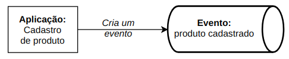
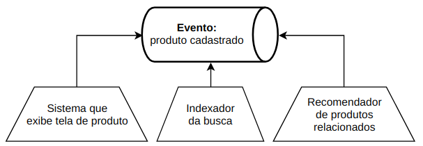

Quebrando um monolito sem quebrar o que funciona
Publicado em:
@andreformento
Gostaria de descrever como estamos lidando com a refatoração do nosso monolito para transformá-lo em microsserviços aqui no Elo7. Acredito que cada problema apresenta uma solução mais apropriada e que vai além da parte técnica - envolve questões culturais, a clareza do problema raiz pra não trocar a tecnologia (ou técnica) e continuar com o mesmo problema inicial. Pretendo mostrar alguns pontos com o objetivo de dar insights e mostrar nossas experiências.
Mostrarei alguns conceitos que ajudaram a guiar nossas escolhas. E, num post futuro, uma parte prática (código) de como usamos algumas ferramentas. E pra isso vou disponibilizar um repositório com um exemplo completo de como é possível implementar tudo isso.
Contextualização
Imagine o cenário em que existe um monolito responsável por quase todas as features da empresa. Ele tem um banco de dados, possui uma base de código consideravelmente grande e antiga, escalabilidade sem muita flexibilidade (você não pode escalar apenas uma feature). Ou seja, todos os problemas clássicos que um monolito pode apresentar.
Quebrar esse sistema traz várias considerações. O primeiro ponto real talvez seja: o time de produto vai apoiar uma refatoração desse nível?

O backlog poderá ficar comprometido com menos entregas no processo de reestruturação da arquitetura. Ou ainda, o risco de cada time seguir um caminho completamente diferente do outro, deixando de lado qualquer tipo de padronização. Antes o monolito obrigava uma mesma linguagem, talvez até um mesmo framework. Isso pode ser visto como bom e ruim: bom que há um padrão e ruim que não há flexibilidade. O meio termo, nesse caso, pode ser um acordo para utilizar linguagens pré-determinadas e usar novas tecnologias quando houver uma razão significativa. É necessário ficar atento para não criar um ambiente caótico. Ainda podemos pensar em mostrar quais vantagens uma estrutura de microsserviços proporcionaria: produtividade ao evoluir features de maneira independente, assim como melhor escalabilidade das aplicações.
Os engenheiros certamente serão os mais afetados: novos desafios, novos problemas, e ao mesmo tempo soluções mais modernas para lidar evolução da plataforma.
Existem diversas estratégias para fazer esse tipo de migração. Seja qual for o modo, sempre é levado em consideração que o sistema atual continuará em uso, evoluindo (mesmo que minimamente) e tendo correções de bugs. Às vezes separar algumas pequenas partes aos poucos costuma ser o caminho natural e que vai de encontro à cultura ágil. Veja mais sobre o strangler pattern.
Caso de uso
Algumas features da nossa aplicação podem ter diferentes necessidades para o momento de escrita e o de leitura.
Vejamos por exemplo um e-commerce. Ele possui um cadastro para vendedores disponibilizarem seus produtos com certas regras de negócio, validações, autenticação, telas específicas (UX) e uma quantidade de acessos baixíssima (somente vendedores logados) chegando à algumas dezenas por minuto. Já as leituras têm um perfil bem diferente, muito conteúdo público, bastante análise para exibir o produto mais adequado na busca, produtos similares ou complementares, recomendações, muitos acessos simultâneos - chegando a milhares de acesso por minuto. Com isso já dá pra perceber a disparidade das demandas.
Seria legal permitir tecnologias distintas e também o dimensionamento da infraestrutura para cada lado (escrita e leitura). Talvez o sistema de escrita não seja tão crítico quanto o de leitura. Os vendedores ficarem impedidos de cadastrar novos (ou alterar) produtos não parece ser tão prejudicial quanto os compradores não conseguirem visualizar os produtos já cadastrados. A escalabilidade pensada para a leitura parece ser bem desproporcional também, assim como, os experimentos com testes A/B que não devem ter muita relação com a escrita.
Command Query Responsibility Segregation (CQRS)
Segundo Martin Fowler, Command Query Responsibility Segregation (CQRS) é um padrão em que a modelagem para a escrita pode ser diferente da modelagem para a leitura da informação. Deve-se observar que isso implica em maior complexidade.
Na prática, há uma aplicação de cadastros que tem toda sua lógica para a escrita que gera um evento. Todas as aplicações interessadas podem reagir às mudanças e consumir esse dado. Desta forma teremos uma comunicação baseada em eventos.

Ou seja, um consumidor pode colocar o dado em algum banco que servirá exclusivamente para leitura, possibilitando assim pensar na melhor ferramenta que resolve esse problema.
Como essa leitura pode ocorrer de várias formas (busca, recomendação, visualização, etc), cada uma dessas aplicações que precisarem exibir os dados podem consumir esses eventos e tratar da forma mais adequada. O consumidor pode, por exemplo, ser um sistema que indexa o dado para busca (no Solr ou Elasticsearch); ou então, o time de machine learning pode criar um algoritmo que consome o dado do produto para gerar recomendações; ou ainda, o sistema que exibe a tela do produto pode consumir o dado e enriquecê-lo chamando o sistema de cálculo do preço à vista ou parcelamento do produto; e assim por diante.

Todos os sistemas que precisarem do dado poderão fazê-lo apenas consumindo o evento. Além disso, com a técnica de usar eventos podemos considerar que os dados estão disponíveis em tempo real e podem reagir as mudanças
Temos até aqui uma ideia de como começar a separar pelo menos um tipo de feature. Para o caso apresentado, estamos falando do contexto do produto, mas por hora podemos pensar em dois níveis ainda mais micro: escrita e leitura. Sendo assim, podemos dedicar esforço inicialmente na leitura do produto.
Ao extrair para um sistema que consiga disponibilizar o dado para leitura, possibilitamos quem está interessado em apenas ler o dado (e fazer algum tratamento especial) começar a ler dessa nova fonte.
Um ponto que pode não ter ficado claro é que essa não é uma estratégia para quebrar todas as features do monolito e isso é bom do ponto de vista da flexibilidade. Não queremos ter uma solução monolítica, queremos algo flexível, queremos ir para o micro. Talvez tenham mais casos parecidos que impliquem numa solução parecida, mas não obriga que todas as features sejam extraídas da mesma forma. Além do que, ao extrair a primeira feature muitas lições serão aprendidas para ter maturidade de evoluir todo esse processo. Aqui já estamos falando de uma questão de mudança de mindset e de cultura.
Ainda serão abordados mais alguns conceitos para que a parte prática tenha embasamento.
Até mais :)